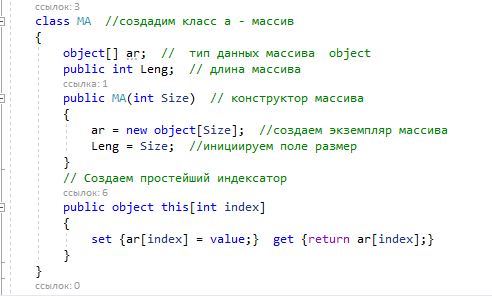
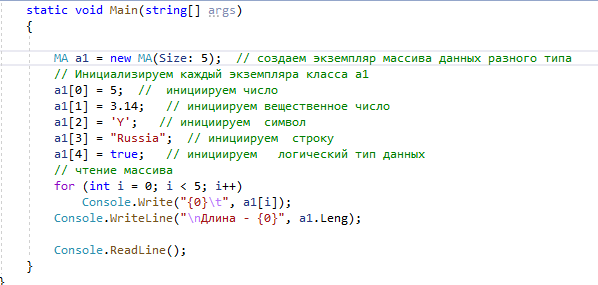
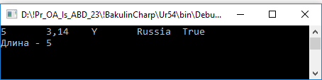
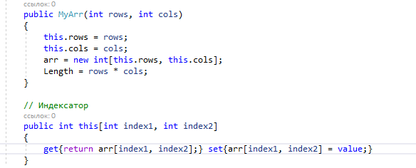
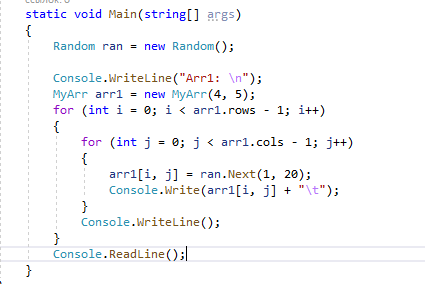
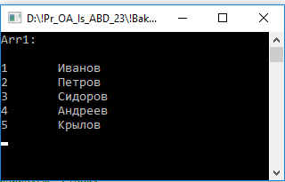

| Самостоятельная работа 54 | ||
| Назад | ||
|
Задание 1. Создать интеллектуальный массив для хранения различного типа данных:
 Пример использования массива
 Результат :
 Задание 2. Создать интеллектуальный двухмерного массива для хранения чисел: Можно также создавать индексатор, принимающий несколько параметров:  Обращение е к массиву 
Задание 3. Создать интеллектуальный двухмерного массива для хранения различного типа данных: Результат :

|
||
| Конспект подготовлен Бакулиным А. М. 2022 год. | ||